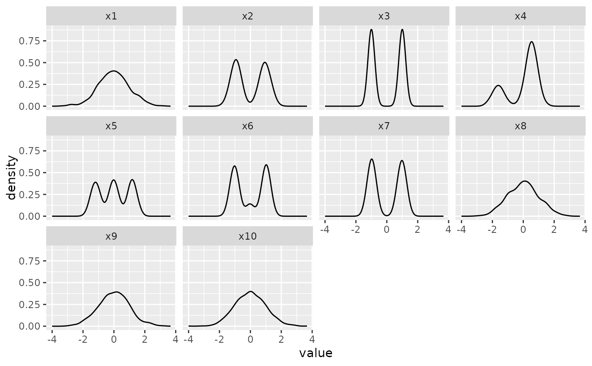
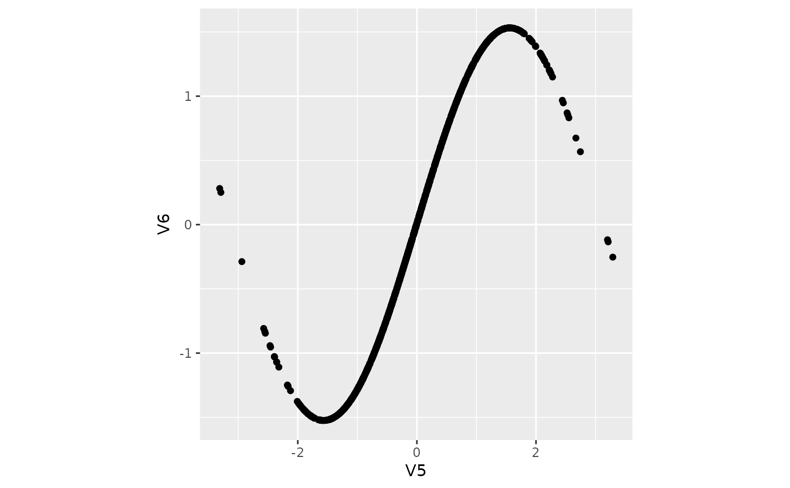
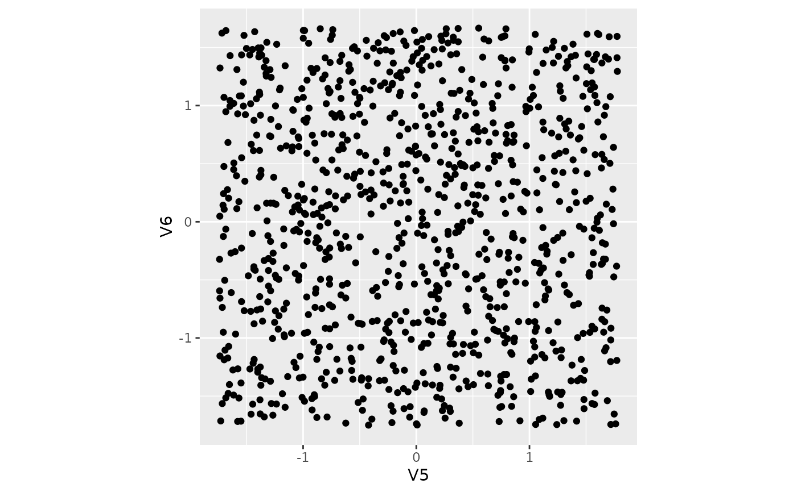
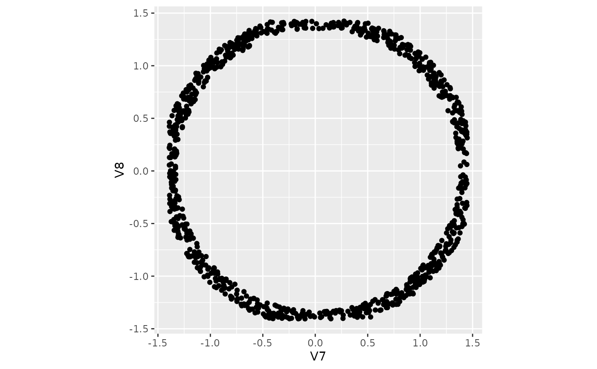

Simulated sine and pipe data for calculating optimisation features. Each dataset has 1000 observations and the last two columns contain the intended structure with the rest being noise. The most commonly used ones are `sine1000` and `pipe1000`, others have dimension suffixed.
Usage
sine1000
sine1000_4d
sine1000_6d
sine1000_8d
pipe1000
pipe1000_4d
pipe1000_6d
pipe1000_8d
pipe1000_10d
pipe1000_12d
boa
boa5
boa6Format
An object of class matrix (inherits from array) with 1000 rows and 6 columns.
An object of class matrix (inherits from array) with 1000 rows and 4 columns.
An object of class matrix (inherits from array) with 1000 rows and 6 columns.
An object of class matrix (inherits from array) with 1000 rows and 8 columns.
An object of class matrix (inherits from array) with 1000 rows and 6 columns.
An object of class matrix (inherits from array) with 1000 rows and 4 columns.
An object of class matrix (inherits from array) with 1000 rows and 6 columns.
An object of class matrix (inherits from array) with 1000 rows and 8 columns.
An object of class matrix (inherits from array) with 1000 rows and 10 columns.
An object of class matrix (inherits from array) with 1000 rows and 12 columns.
An object of class tbl_df (inherits from tbl, data.frame) with 1000 rows and 10 columns.
An object of class tbl_df (inherits from tbl, data.frame) with 1000 rows and 5 columns.
An object of class tbl_df (inherits from tbl, data.frame) with 1000 rows and 6 columns.
Examples
library(ggplot2)
library(tidyr)
library(dplyr)
boa %>%
pivot_longer(cols = x1:x10, names_to = "var", values_to = "value") %>%
mutate(var = forcats::fct_relevel(as.factor(var), paste0("x", 1:10))) %>%
ggplot(aes(x = value)) +
geom_density() +
facet_wrap(vars(var))

sine1000 |> ggplot(aes(x = V5, y = V6)) + geom_point() + theme(aspect.ratio = 1)

pipe1000_8d |> ggplot(aes(x = V5, y = V6)) + geom_point() + theme(aspect.ratio = 1)

pipe1000_8d |> ggplot(aes(x = V7, y = V8)) + geom_point() + theme(aspect.ratio = 1)
